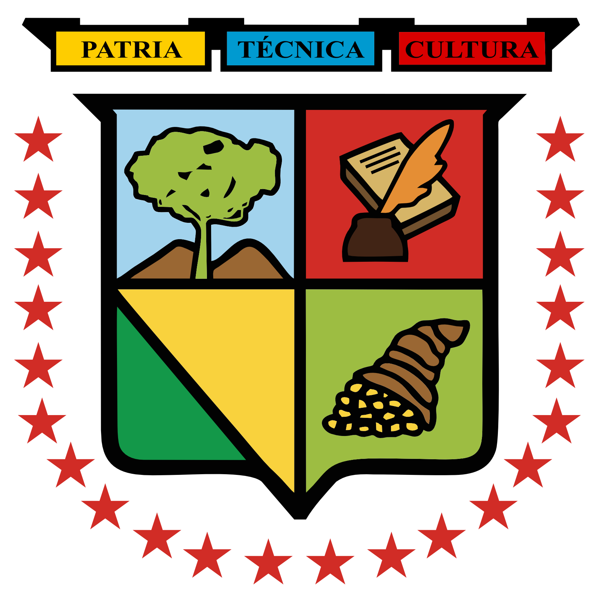
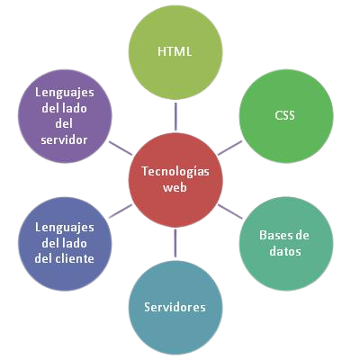

Sobre mí

¿Quién soy?
Soy Jostyn Alcivar, un estudiante de Ingeniería de Software de la Universdad Tecnica de Manabi ubicada en Portoviejo - Ecuador, actualmente estoy cursando quinto nivel.
Soy de Bahia de Caraquez, pero actualmente estoy residiendo en Portoviejo por motivos de estudio.
Me gusta la programación y el uso de sistemas GNU/Linux por eso mi elección de ingenieria de software, tambien me gustan las matemáticas, hacer deportes y juegos online.
Tengo una novia muy linda y atenta, su pagina se encuentra en: aquí
Mis metas a corto plazo:
- Aprender programación
- Estudiar bash
- Acabar de leer un libro sobre Administración de Sistemas
- Pasar el semestre actual
Herramientas & Tecnologías utilizadas:
- Java: Desarrollo de aplicaciones funcionales.
- HTML, CSS, JS: Desarrollo web front-end.
- PHP: Desarrollo de aplicaciones web del lado del servidor.
- MySQL: Administración de bases de datos.
- Administración de sistemas GNU/Linux: Configuración y mantenimiento de sistemas operativos.
- Servidores web: Configuración y administración de servidores web.
- Modelo Cliente-Servidor: Diseño y desarrollo de sistemas basados en este modelo.
Durante 4to semestre de ingenieria de Software se desarrolló de forma grupal un sistema utilizando la mayoria de dichas tecnologías. Adjunto informe del proyecto: Informe Proyecto NutriHealth

Contacto
Para comunicación de forma directa acceda a alguno de los siguientes enlaces:
O comuncarse al 0991442782
Vía: